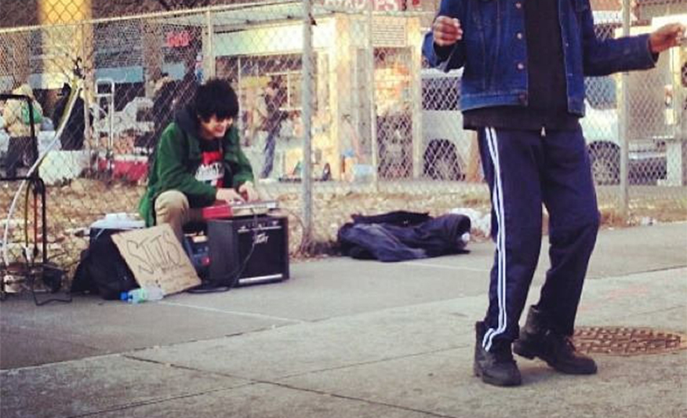
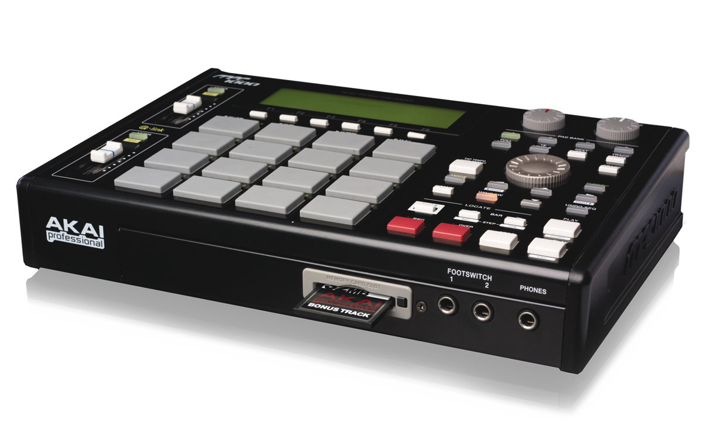
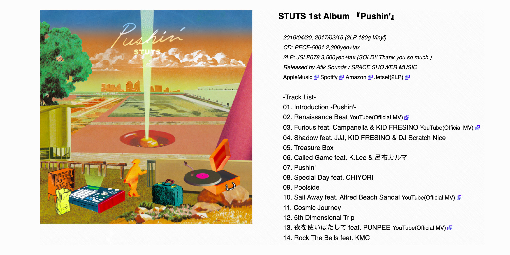
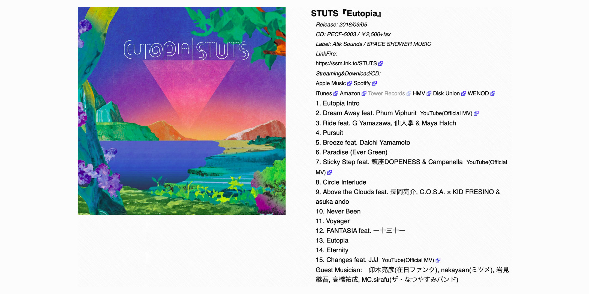

Musician
- STUTS
- Name: Yuya Kita
- Born in 1989
- Debut with 『Pushin’』 in 2016
- HIPHOP BEAT MAKER, MPC PLAYER, PRODUCER
- Label: SPACE SHOWER MUSIC
- 2019 Space Shower Music Award - BEST GROOVE ARTIST
- 2022 Space Shower Music Award - BEST COLLABORATION SONG
About
1. “STUTS, 音量上げて!(Turn up the volume!)"
2013년 2월 겨울, 뉴욕 할렘 125번가. 홀린 듯 무언가를 연신 두드려대는 더벅머리 동양인 주위로 하나둘 사람들이 모여든다. 조심스레 그의 손을 관찰하는 아이들을 시작으로 그를 영상으로 담아내는 남성부터 흥에 겨워 어깨춤을 추는 노인까지. 진귀한 광경에 발길을 멈춘 이들이 호기심 어린 눈빛으로 그를 바라보고 있다. 심지어 한 아마추어 래퍼는 자신을 기억해 달라며 종이 상자에 이름을 적어 두기까지 한다. 이에 더해 옹기종기 모인 할렘의 관객들은 하나같이 입을 모아 이 작은 동양인의 음악이 진짜 힙합, 할렘의 음악이라며 연신 그를 치켜세웠다. 스터츠(STUTS)의 존재를 본격적으로 알리기 시작한 할렘 버스킹은 그가 힙합의 뿌리를 얼마만큼 이해하고 사랑하는지 증명하기에 충분했다.
2. YOUTH
2008년부터 ‘YOUNG DRUNKER’의 트랙 메이커로 활동해온 스터츠지만 그의 본격적인 커리어는 할렘 버스킹 영상이 유튜브를 통해 전 세계로 퍼지며 시작됐다. 조금씩 입소문을 탄 그의 동영상은 알프레드 비치 샌달(Alfred Beach Sandal, 이하 ABS) 등을 비롯한 수많은 아티스트들의 눈에 들었고, 심지어는 50센트가 그의 비트를 쓰고 싶다는 후문이 돌기도 했다(결국에는 50센트가 좀 더 하드코어 한 비트를 원해 무산됐다고는 하지만). 2013년, 졸업 기념으로 떠난 미국 여행에서의 급작스러운 버스킹과 뜻밖의 성공. 그조차도 예상치 못한 주목을 받게 되기는 했지만, 스터츠의 성공을 우연으로 치부해버린다면 어릴 적부터 꾸준히 취향과 꿈을 쌓아온 그가 조금은 억울해할지도 모르겠다.
스터츠는 어릴 적부터 기계와 꽤 친했다. 여느 아이들처럼 게임광이었던 그는 키보드 그림을 그려 놓고 두드리며 노는가 하면, 버튼을 누르는 단순한 행위조차도 즐겼다고 한다. 그때까지만 해도 음악 자체에는 별 관심이 없었다고는 하지만 아마 그가 MPC를 사랑하는 이유도 이러한 이유에서이지 않을까. 그가 본격적으로 힙합에 빠져들기 시작한 건 초등학교 6학년 때 구매한 케미스트리(Chemistry) 1집 앨범을 통해서였다. 이외에도 립 슬라임(Rip Slyme), 에미넴(Eminem) 등을 즐겨 들으며 직접 가사를 쓰기도 했으며 친구들에게도 여러 장르의 음악을 추천해 주었다고 한다. 하지만 안타깝게도 힙합을 즐겨 듣는 친구가 없어 계속해서 혼자 파고들 수밖에 없었다고 하는데, 역시 ‘덕후’같은 그의 면모가 엿보이는 어린 시절이다.
유년 시절 그의 집에서 흘러나오던 비틀스(The Beatles), 야마시타 타츠, 유민 등의 멜로우한 음악 또한 지금 스터츠의 음악 성향에 꽤나 영향을 미쳤을 것이다. 그렇지만 무엇보다도 스터츠 음악 인생의 전환점은 그가 중학교 3학년에 어느 CD 숍에서 구입한 어 트라이브 콜드 퀘스트(A Tribe Cold Quest)의 컴필레이션 앨범에 실린 'Buggin'Out '이었다. 90년대 미국 힙합의 클래식함과 곡을 이끌어 가는 굵은 드럼 라인은 그에게 충격 그 자체였을 터. 오로지 랩에만 몰두해 있던 스터츠가 트랙에 눈을 뜨게 됐으니 말이다. 필자는 이 곡을 듣고 유년 시절의 스터츠에게 전적으로 동의하게 됐다.
3. MPC(Music Production Center)
앞서 언급한 할렘 버스킹에서 스터츠가 신나게 두드리던 물건의 정체가 바로 MPC, Music Production Center다. 바둑판을 연상케 하는 이 요상한 물건은 아카이(AKAI) 사의 로저 린(Roger Linn)이 디자인한 전자 음악 장비로 드럼 머신에서 한층 더 발전된 형태라 할 수 있다. 16개의 패드에 각기 다른 소리를 넣고 두드리는 MPC는 트랙을 믹싱하고 플레이할 때 사용되며, 특히 힙합 프로듀싱에서는 매우 독보적 위치를 차지하고 있어 여러 DJ들의 라이브 연주 공연에서 그 모습을 드러내기도 한다.
MPC의 가장 초기 모델은 1988년에 출시된 MPC60다. 5000 달러라는 어마 무시한 가격으로 출시됐음에도 몇 년 전까지 중고 시장에서 활발히 거래된 모델이다. 스터츠가 뉴욕 버스킹 당시 사용한 모델은 MPC1000으로 고등학교 1학년, 자신의 랩에 맞는 비트를 만들기 위해 구입했다 한다. MPC100은 이전 모델들의 간소화 버전이라 할 수 있는데, 3kg가량의 가벼운 무게만 봐도 그렇다. 하지만 이전 세대들과 비교했을 때 MPC 특유의 질감이 사라졌다는 이유로 외면받기도 했다. 일각에서는 타이거JK가 MPC1000을 처음 사용 후 쓰레기라며 집어던졌다는 우스갯소리도 돈다고.
*사실 MPC 2000XL 사고 싶었는데 너무 비싸서 사지 못했다는 스터츠. 전자 드럼 머신에는 도가 튼 그지만 실제 드럼은 칠 줄 모른다나.
4. Music
누자베스 이후 일본에 깊게 뿌리내린 재즈 힙합은 스터츠의 음악에서 역시 그 진한 향을 풍기고 있다. 하지만 스터츠만의 아날로그한 질감과 마치 스윙을 듣는 것 같은 드럼 사운드는 기존의 재즈 힙합과는 거리가 다소 멀다. 팝적인 감각을 겸비한 스터츠의 음악은 어쩌면 누자베스식 일본 재즈힙합보다는 클래식한 미국 본토 힙합에 더 다가가 있는지도 모르겠다. 그럼에도 ‘한곳에 머물면 닫힌다’는 스터츠의 말 그대로 그는 어느 한 장르에 갇히길 거부하고 있다. 실제로 스터츠는 장르를 불문하고 다방면의 아티스트들과 협업하며 그의 천부적인 재능이 얼마나 많은 이들에게 사랑받고 있는지 몸소 증명해냈다. 댄서, 래퍼, 밴드, 프로듀서 등 그의 비트 위에 자신들의 목소리를 얹고 싶어 하는 이들이 줄을 섰으니 말이다. 현재는 MPC로 직접 짠 비트가 주를 이루던 데뷔 초기와는 달리 피아노, 기타 등 자신이 직접 연주한 사운드를 비트에 삽입하며 음악적 다양성을 확장해 나가고 있는 그다.
스터츠의 협업은 쉬이 국적을 초월한다. 여러 아티스트들과의 작업 중에서도 태국의 천재 싱어송라이터 품 비푸릿(Phum Viphurit)과 협업한 ’Dream Away’는 이미 국내 마니아 팬들 사이에서도 꽤 유명하다. 2019년 품 비푸릿의 내한 공연 오프닝 무대에 스터츠가 직접 MPC를 연주하며 한국 팬들에게 첫 모습을 내비쳤으며 바로 다음날 이어진 스터츠의 공연에서는 폼 비푸릿이 스페셜 게스트로 참여해 멋진 무대를 선사했다. 최근에는 싱어송라이터 수민(SUMIN)과 콜라보한 ‘Mirrors’ 또한 화제다. 다이치 야마모토(Daichi Yamamoto)가 내뱉는 일본어 벌스와 묘하게 어우러지는 수민의 훅이 흥미롭다. 아티스트들의 수많은 러브콜 이외에도 광고 및 방송 프로그램의 오프닝 사운드를 작곡하는 등 폭넓은 장르를 아우르는 작업물을 쌓아온 스터츠. 앞으로의 그가 또 어떤 새로운 음의 조화를 선보일지 기대하지 않을 수 없다.
Album
1. 『Pushin’』
스터츠의 어수룩한 외모뿐만 아니라 그가 일본 최고의 명문대, 도쿄대학교를 졸업했다는 점 그리고 한때 컴퓨터 프로그래밍에도 관심을 보였다는 사실은 얼핏 그를 괴짜 천재로 착각하게 만든다. 그러나 그의 첫 정규 앨범 『Pushin’』이 세상에 나오기까지 걸린 시간은 무려 3년. 다른 사람들의 평가가 아닌 자신에게 납득이 가는 작품을 완성시키고 싶었다는 그는 사실 신중에 신중을 기하는 엄청난 노력형 인간이다. 철학자 칸트가 그랬던 것처럼 시간을 정해두고 규칙적인 작업을 이어나가는 체계적인 아티스트가 바로 스터츠다. 음질과 음반 전체의 흐름에 대한 집요한 집착으로 완성된 1집 앨범을 듣고 스스로 눈물이 멈추지 않았다고 하니, 과연 각고의 노력을 통해 탄생한 결과물이 아닐 수 없다.
펑크, 소울, 재즈 등의 음반에서 주옥같은 음의 조각들을 떼어내 MPC로 한데 모으고 신디사이저로 맛을 더한 스터츠의 1집 트랙들. 날씨 좋은 주말 오후나 노을이 질 즘에 듣는 그의 음악은 편안함과 상쾌함 그리고 애수를 자아내기에 제격이다. 정석적인 재즈 힙합보다는 캐치함과 팝적인 감각을 더한 스터츠의 그루브는 MPC 연주 이외에도 트라이앵글, 기타, 신디사이저 등의 라이브 연주를 그대로 녹음하며 다채로움을 더했다. 그가 직접 MPC를 연주한 곡은 CD 크레딧에 'performed by STUTS with MPC 1000'이라 붙은 'Introduction ', 'Renaissance Beat', 'Pushin', 'Poolside' 총 네 곡이다.
모두 14곡으로 꾸려진
실제 드럼으로 녹음했다고 해도 전혀 의심이 들지 않을 정도의 생생한 MPC 라이브 연주가 곁들여진 ‘Poolside’.
싱글로도 한차례 발매되었던 'Sail Away’는 1집 앨범 중에서도 가장 잘 알려진 곡이다. 브라질 풍의 피아노와 혼, 기타 등을 샘플링해 만든 'Sail Away’의 비트는 ABS의 인디 록 보컬과 조화롭게 어우러지며 90년대의 싱그러운 느낌을 물씬 풍기고 있다.
반면 ‘COSmic Journey’는 상당히 독특한 80년대 펑크 스타일을 떠올리게 하는 곡이다. 드럼을 단음으로 연주하는 것이 아닌, 여러 개의 드럼 루프를 겹쳐 사용한 ‘COSmic Journey’는 샘플링한 피아노 코드를 MPC로 옮긴 후, 이를 다시 스터츠가 직접 신디사이저로 연주해 완성했다. 신디사이저는 MPC와 마찬가지로 스터츠 음악의 묘미라고 할 수 있는데, 그는 어릴 적부터 스티비 원더(Stevie Wonder)의 음악에 흐르던 따뜻한 느낌의 신디사이저를 굉장히 동경했다고 한다. 스터츠의 음악 전반에 감도는 따뜻함에는 역시 이유가 있었던 듯하다.
스터츠의 손끝에서 탄생하는 멜로디는 한번 들으면 금세 귀에 익어 버릴 만큼 중독적이다. 여타 작업물에서도 그의 손길이 묻은 곳이면 금방 표가 나곤 하는데, 마치 듣는 이에게 무언의 신호하는 듯한 스터츠의 비트는 그만의 음악언어가 존재한다고 믿게 만드는 힘이 있다.
2. 『EUTOPIA』
앨범 『ABS + STUTS』 후 단지 다음 앨범을 낼 요량으로만 곡을 찍어내던 스터츠는 어느 순간 한 트랙의 뼈대에서 음악을 통해 그리고자 했던 이상향을 보게 됐다고 한다. 그 곡이 바로 그의 두 번째 정규 앨범 『EUTOPIA』의 타이틀곡 ‘Eutopia’다.
좋은 음악을 듣고, 모두에게 인정받으며 친구들과 먹고 마시는 것. 이것이야말로 스터츠가 바라던 이상적인 상태였다. 하지만 그에게 ‘이상적 상태’가 진정으로 의미하는 바는 순간적이기 보다 영속적인 것이었다. 행복의 순간이 단절되지 않고 영원히 지속되는 느낌이랄까. 스터츠는 어쩌면 리스너들이 『EUTOPIA』 듣는 순간 동안만이라도 그러한 상태에 도달했으면 하고 바랬던 것 같다.
힙합, 재즈, 퓨전 시티팝을 잇는 부드러운 그루브와 멜로디로 『Pushin'』 이후 2년 반 만에 돌아온 스터츠. 인스투르멘탈 8곡과 보컬 7곡으로 꾸려진 『EUTOPIA』는 캘리포니아 해변이 눈앞에 펼쳐지듯 한 따사롭고 여유로운 분위기가 돋보이는 앨범이다. 래퍼 도프니스(DOPENESS)를 시작으로 캄파넬라와 품 비푸릿(Phum Viphurit) 등 더욱 다채로워진 아티스트들의 피처링은 물론, 라이브 세션을 직접 샘플링한 점 또한 이전 앨범에서는 느낄 수 없던 폭넓은 음악성을 자랑하는 부분이다.
『EUTOPIA』에서 가장 있기 있는 곡을 꼽으라면 두말 없이 ‘Dream Away’라 할 것이다. LA에서 만들어진 비트답게 이국적인 햇살의 분위기가 물씬 느껴지는 부드러운 선율은 리스너들의 발걸음을 한껏 가볍게 한다. 한편, MPC 플레이어로서의 모습을 대중들에게 각인시켰던 『Pushin'』과는 달리 『EUTOPIA』의 스터츠는 뮤지션으로서의 면모를 여과 없이 뽐내기도 했다. 세밀하게 조합한 비트 위에 더한 신디사이저 연주는 기계적이지 않은 생생한 느낌으로 리스너들을 귀를 매혹하기에 충분했다.
‘Interlude’을 제외하고 『EUTOPIA』에서 가장 먼저 완성한 곡은 2015년 즈음 제작한 트랙을 기초로 한 ‘Pursuit’이다. 앨범에 트랙을 얹기 전 피아노, 키보드, 베이스를 라이브 녹음한 뒤 다시 MPC로 드럼을 연주해 마무리했다. 스터츠는 보통 이런 복잡한 과정을 거친 후에도 믹스, 마스터링 등의 고도로 세심한 작업을 이어가는 편이긴 하지만 퀀타이즈*를 깔끔하게 하는 것에 초점을 맞추는 편은 아니다. 가장 중요한 건 그가 들었을 때 좋은지, 그렇지 않은지 그뿐이다. 실제 소리를 듣는 과정에서 떠오른 발상을 이상적인 상태로 뽑아내는 그이기에 라이브 연주 샘플링을 고집하기는 하지만, 어쩌면 이런 부분들이 모여 스터츠의 음악을 더 말랑말랑하게 만들어 주는 건 아닐까.
*퀀타이즈Quantize: 박자의 흔들림이나 연주할 때 타이밍을 간단하게 바로잡는 기능
‘좋다’라는 뜻의 접두어 ‘eu’와 장소를 뜻하는 ‘topos’를 합해 만든 ‘Eutopia’는 ‘유토피아(UTOPIA)’와 마찬가지로 ‘이상향’을 뜻하기는 하지만 두 단어의 엄밀한 의미를 따져보면 각자가 가리키는 바를 구분할 수 있다. 인간이 상상할 수 있는 최고의 이상적 사회(단어 의미 그대로 풀어쓰자면 ‘없는 곳’)을 를 가리키는 유토피아와는 달리 지상에서 실현 가능한 이상적 사회를 말하는 단어가 ‘EUTOPIA’다. 즉, 『EUTOPIA』는 아득히 먼 행복이 아닌 우리가 발 디디고 있는 이 땅 위의 행복을 찾는 스터츠의 고뇌가 담긴 앨범이라 하겠다.
Play
“단지 정확하게만 MPC를 두드리는 것이 아닌 감정을 표현할 수 있는 그루브를 만들고 싶다.”
1. Flippin' The Human Groove
스터츠를 스타 반열에 올린 MPC1000의 연주를 가장 가까이서 감상할 수 있는 영상이다. 멀찍이서 그의 화려한 손놀림을 비추던 여느 영상과는 달리 손짓 하나하나에 곡조가 어떤 변화를 맞이하는지 관찰하는 재미가 쏠쏠하다. ‘STUTS Theme Part 2 -The 8th Wonder Experience-‘을 시작으로 ‘Keep on Bangin' Part 1&2’ 그리고 ‘Flippin' Some Old School Joints Part 1,2&3’로 이어지는 스터츠의 플레이는 그가 MPC 플레이어로 막 활약하기 시작하던 10년 전 모습을 그대로 담았다. 무엇보다 톡톡 쏘아 대는 스터츠 특유의 손동작과 어수룩하게 팔을 휘젓는 동작이 묘하게 어우러지는 것이 포인트.
2. 2013 할렘 버스킹
스터츠하면 절대 빼놓을 수 없는 영상이기에 중복을 고사하고 할렘 버스킹을 꼽았다. 사실 이 영상은 스터츠의 MPC 연주 실력보다는 그의 음악을 즐기는 할렘가 주민들의 반응과 흥겨움을 느끼는 재미가 더 크다. 하지만 스터츠의 가장 거칠고 신인다운 플레이를 볼 수 있다는 점이 이 영상의 묘미다. 뉴욕 할렘 길거리에 앉아 있던 스물다섯 소년의 어색한 미소가 대변하는 미국 땅에서의 첫 버스킹에 대한 긴장과 부끄러움이 그대로 전해지기도 한다. 하지만 어리숙한 외모와는 달리 거침없이 그의 손끝에서 퍼져나가는 울림은 지나는 이들의 걸음을 멈추고, 어깨를 들썩이게 하고, 입가에 미소를 짓게 만들기에 충분했다. 지구 반대편에서 건너온 청년의 처음이자 마지막 할렘 버스킹. 경쾌한 그의 손놀림만큼이나 유쾌한 구경꾼들의 반응을 함께 감상해 보자.
정말 좋은 기획이란 생각이 드는 영상이다. 요즘에야 많이 죽은 유니클로지만 불과 2, 3년 전까지만 해도 ‘라이프웨어 = 유니클로’라는 공식이 딱 들어맞을 만큼 우리네 삶에 녹아들었던 브랜드 아니던가. 유니클로가 기획한 음악 콘텐츠 ‘LifeWear Music’의 두 번째 이야기를 스터츠가 함께했다. 가장 편안한 옷을 입고 가장 평온한 노래를 만드는 영상 속 그의 모습은 집이라는 공간이 갖출 수 있는 이상적인 모습을 비춘다. 따사로운 해가 드는 창가 책상에 앉아 하나, 둘 비트를 쌓아가던 스터츠는 이내 그가 제일 잘하는 그루비하고 로우파이한 음의 조화를 들려준다. 때로는 잠시 숨 고르듯 고양이를 쓰다듬기도 하고 끼니를 챙기기도 하다가 금세 다시 기타를 들어 음을 더하는 모습까지.
이번 기획에서는 스터츠의 독보적인 MPC 플레이는 볼 수 없다. 대신 그의 손끝에서 빚어지는 음 하나하나가 우리의 일상에 얼마나 자연스럽게 스며들 수 있는지 증명하고 있을 뿐이다. 요즘 시대의 이상적인 홈워크 모델을 스터츠가 몸소 보여주고 있는 것 같기도 하다. 그런 의미에서 필자는 모처럼 한가로운 아침을 맞는 이들에게 스터츠의 ‘LifeWear Musicr’을 조심스럽게 권해본다. 싱그러운 공기와 음률의 조화에 미소가 절로 지어지기를 기대하며.
Favorite Songs
1. Renaissance Beat
스터츠하면 뭐니 뭐니 해도 이 곡, ‘Renaissance Beat’를 빼놓고 이야기할 수는 없을 것 같다. 첫 번째 정규 앨범 『Pushin’』의 두 번째 트랙으로 좀처럼 업데이트되지 않는 필자의 플레이리스트에 오랜 시간 자리해 온 곡이기도 하다. 온갖 예술이 새롭게 태어나고 부흥했던 시대를 표현한 음악, 어쩌면 ‘부흥’ 그 자체라 불러도 될 만큼 흥겨운 곡조. 재즈힙합을 이용한 스터츠의 표현은 탁월했다. 추상적인 관념만이 남은 머나먼 시대가 다시금 귓가에 맴도는 듯하다.
필자는 이 곡을 1번 트랙의 ‘Introduction’과 연이어 들어보는 것을 추천한다. 1번 트랙이 끝나갈 즈음, 중후한 목소리의 사회자가 웅장한 시대의 서막을 알리는 듯 외치는 ‘Renaissance!’는 자연스럽게 다음 트랙으로 넘어가기 위한 기분 좋은 전조가 된다. 다음 곡으로는 ‘Renaissance Beat’ 뮤직비디오(매우 촌스럽지만 연주만은 일품인)에서와 마찬가지로 ‘Pushin’이 좋겠다. ‘Renaissance’의 끝과 ‘Pushin’의 시작이 묘하게 일치하는 게 집중해서 듣지 않으면 마치 한 곡으로 착각할 만큼 그 흐름이 자연스럽다. 물론 그 안에서도 저마다의 변주도 화려한 것이 스터츠의 매력이지만.
2. Horizon
도쿄 인디 신(scene)에서 잔뼈가 굵은 키타자토 아키히사(kitazato Akihisa)의 솔로 프로젝트, ABS가 스터츠와 다시 한번 일을 냈다. 2015년에는 스터츠가 ABS의 ‘Soulfood’에 피처링으로, 2016년에는 ABS가 스터츠의 대표곡’Sail Away’에 피처링으로 참여하더니 기어코 두 아티스트가 협동 앨범 『ABS+STUTS』를 발매한 것이다. “Short Trip”이라는 부제에 걸맞게 휴양지의 나른한 햇살과 코끝을 간질이는 산들바람을 연상케하는 앨범은 부제의 의미 그대로 우리를 평온한 세계로 초대한다.
앨범의 두 번째 트랙 ‘Horizon’은 뮤직비디오에서 느낄 수 있는 것처럼 휴양지의 나른한 햇살 위로 흐르는 멜로우한 비트와 ABS의 간드러지는 보컬이 도드라지는 곡이다. ABS는 이 곡을 두고 세계 정세나 일본 정치 상황에 필요한 러브송이라 농담을 건네기도 했다. 두 아티스트의 완벽한 합만큼이나 Horizon의 여정에도 흠이 없다면 좋았으련만, 생생한 비트 아래에 숨겨진 쓸쓸함은 어딘가를 방황하는 듯한 여행자의 외로움을 대변하는 듯하다. 따뜻한 햇살이 함께하는 나른한 오후를 혼자 보내고 있다면 ‘Horizon’을 틀어두고 늘어지게 낮잠을 자보는 것을 권한다.
Personal Comment
누자베스의 ‘Aruarina Dance’를 매일같이 듣던 때가 있었다. 몸도 마음도 성치 못했던 고3 수험생 시절, 가만히 누워 그의 음악을 듣고 있으면 새벽의 고요에 빠져드는 느낌에 기분이 썩 나아지곤 했다. 누자베스를 시작으로 일본 재즈힙합의 매력에 푹 빠진 뒤로는 제2의 누자베스를 찾아 헤맸다. 물론 그 욕망의 기저에는 남들 모두가 입을 모아 찬양하는 누자베스에게서 도망치고 싶은 마음이 가득했지만 말이다.
사실 객관적인 평가로 보나 개인적인 취향으로 보나 스터츠가 누자베스보다 낫다고 할 수는 없다. 다만, 누자베스에 신물이 난 이들이나 새로운 기류의 일본 재즈힙합을 찾고 있는 이들에게는 스터츠가 더없이 좋은 선택지가 될 것이란 사실은 분명하다. 무엇보다 너드(nerd)미 넘치는 그의 외모와 MPC와 혼연일체가 된 듯한 연주는 보고 있는 것만으로도 음악에 잔뜩 취한 하루를 보내고 싶게 만드니까 말이다. 필자의 뻣뻣한 몸뚱이조차 흔들게 만드는 ‘Renaissance Beat’가 아니던가.
References
- Stutsbeats
- Space Shower Music
- CINRA
- CROWN CORD
- GIRL HOUYHNHNM
- Namu Wiki
- INDIEPOST